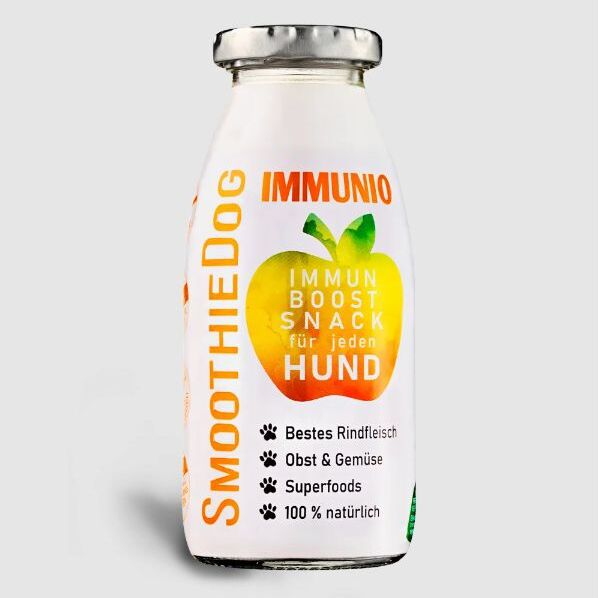

Página principal / Perros / Alimentación natural & suplementos / SmoothieDOG - Inmunio


SmoothieDOG - Inmunio
El snack para perros especiales
Todos los perros necesitan un refuerzo inmunitario en determinadas etapas de su vida. Para reforzar el sistema inmunitario, la carne de vacuna, la remolacha, la zanahoria y la chiriva son ideales. Los superalimentos copos de coco, cúrcuma y escaramujo tienen un efecto antibacteriano. El contenido en vitamina C de la rosa mosqueta multiplica por el dos el de los cítricos. La hierba de San Juan alegra el ánimo en los días oscuros. Bien preparado en días húmedos o antes y después de esfuerzos como enfermedades o intervenciones quirúrigicas - o simplemente porque Inmunio sabe delicioso.
Formato: 250 ml
3,94 €
3 cuotas sin interés de 1,31 €
Impuestos incluidos
Plazo de entrega: aproximadamente 2-6 días hábiles
DESCRIPCIÓN
RESEÑA(0)
Smoothie Dog es un snack liquido y carnoso que complementa la Alimentación diaria de perros de todas las edades y tamaños.
Alimento complementario para perros que se administra a voluntad como parte de una dieta variada y equilibrada. El frasco se puede porcionar, ya que es reseilable. Una vez abierto, guárdelo en un lugar fresco y déselo en un plazo de 3 días.
Consejo de experto: Perfecto congelado como helado para perros o mezclado con el agua de bebida como sabroso complemento. Bajo en calorías y fácil de digerir para cualquier perro.